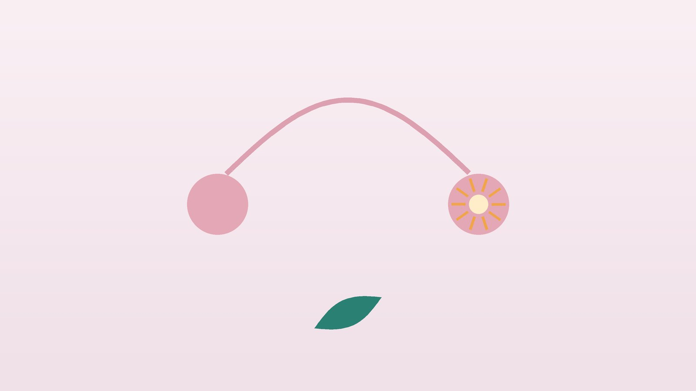

건강 칼럼 · 인천 배란통 한의원
생리 사이 한쪽 아랫배가 콕콕 쑤신다면, 배란통 한방 관리

나의 통증, 배란통일까요?
- 다음 생리 예정일 약 2주 전에 아랫배가 아프다
- 통증이 오른쪽이나 왼쪽 한쪽에만 있다
- 통증이 몇 시간에서 이틀 정도 지나면 사라진다
- 달마다 아픈 쪽이 바뀌기도 한다
- 그 무렵 투명하고 늘어나는 냉이 많아진다
- 배란 무렵 속옷에 피가 살짝 비친다
이 체크리스트는 진단 도구가 아니라 상담이 필요한지 가늠해 보는 참고용입니다.
배란통은 왜 생기나요?
영국 국민보건서비스(NHS)는 배란통을 배란 무렵 한쪽 아랫배에 생기는 통증으로, 보통 몇 분에서 48시간까지 이어지며 대부분 해가 없다고 설명합니다. 난자를 품은 난포가 커지면서 난소 겉막을 늘리고, 난포가 터질 때 나오는 소량의 액체나 피가 복막을 자극하는 것이 원인으로 꼽힙니다. 독일어로 '가운데 통증'이라는 뜻의 미텔슈메르츠(mittelschmerz)라고도 부릅니다.
배란 무렵 에스트로겐이 잠깐 떨어지면서 소량의 출혈이 비치는 배란기 출혈이 함께 오기도 합니다. 다만 생리 사이의 출혈은 자궁 용종이나 자궁경부 질환 같은 원인도 있으므로, 반복된다면 산부인과 검진으로 확인하는 것이 좋습니다. 배란통이 매달 심하다면 자궁내막증이 숨어 있는지도 살펴볼 필요가 있습니다.
바로 응급실로 가야 하는 신호
- 통증이 갑자기 아주 심하거나 점점 심해진다
- 열, 구토, 식은땀, 어지럼, 실신이 있다
- 생리가 늦어졌고 임신 가능성이 있다 (자궁외임신)
- 오른쪽 아랫배를 누르면 아프고 떼면 더 아프다 (맹장염)
- 통증이 이틀 넘게 계속된다
난소 낭종이 터지거나 꼬인 경우, 자궁외임신, 맹장염은 빠른 치료가 필요한 응급 질환입니다.
한의학은 배란기의 통증을 어떻게 보나요?
한의학에서는 생리와 생리 사이의 시기를 경간기(經間期)라 부르고, 이때 생기는 아랫배 통증을 경간기복통(經間期腹痛), 출혈을 경간기출혈(經間期出血)로 다룹니다. 옛 의서에서는 이 무렵을 '적당한 때(的候)'라 하여 임신하기 좋은 시기로 보았는데, 오늘날의 배란기와 같은 시기입니다.
생리가 끝난 뒤 몸은 혈과 음기를 차곡차곡 채우다가, 배란기에 이르러 음이 가득 차면 양으로 바뀌며 체온이 오르는 단계로 넘어갑니다. 이 음에서 양으로의 전환(重陰轉陽)이 매끄러우면 아무 불편 없이 지나가지만, 바탕이 되는 음기가 부족하거나, 습과 열이 막고 있거나, 기와 혈이 뭉쳐 있으면 전환이 거칠어져 통증과 출혈이 생긴다고 보았습니다. 기초체온표에서 저온기에서 고온기로 넘어가는 지점이 바로 이 전환기입니다.
나의 배란통은 어떤 유형일까?
1. 신음허(腎陰虛) 바탕이 마른 유형
- 이런 분에게 많아요
- 마르고 늦게 자는 분
- 나타나는 모습
- 은근하게 아프고 배란기 출혈이 조금씩 비친다
- 함께 오는 몸의 신호
- 허리 시큰함, 입 마름, 손발바닥 열감
- 진찰에서 보이는 모습
- 혀가 붉고 설태가 적음
- 치료 방향
- 부족한 음기를 채워 전환을 돕는 방향 (양정종옥탕 계열)
- 오늘부터 해 볼 것
- 배란기 전후로는 밤샘과 과로를 피하세요.
2. 습열(濕熱) 끈적한 열이 막은 유형
- 이런 분에게 많아요
- 냉이 많고 기름진 음식을 즐기는 분
- 나타나는 모습
- 아랫배가 묵직하게 당기고 누런 냉이 늘어난다
- 함께 오는 몸의 신호
- 소변이 진함, 몸이 무거움, 입이 끈적함
- 진찰에서 보이는 모습
- 설태가 누렇고 끈적함
- 치료 방향
- 습과 열을 걷어 내는 방향 (청열이습 위주의 처방)
- 오늘부터 해 볼 것
- 냉이 많아졌다면 산부인과 검진도 받아 보세요.
3. 기체혈어(氣滯血瘀) 찌르듯 아픈 유형
- 이런 분에게 많아요
- 생리통도 심하고 스트레스가 많은 분
- 나타나는 모습
- 한쪽 아랫배가 콕콕 찌르듯 아프고 누르면 더 아프다
- 함께 오는 몸의 신호
- 생리 덩어리, 가슴 팽팽함
- 진찰에서 보이는 모습
- 혀에 어두운 반점
- 치료 방향
- 막힌 흐름을 풀어 통증을 줄이는 방향 (계지복령환 가감)
- 오늘부터 해 볼 것
- 배란기 2~3일 전부터 가벼운 걷기를 해 보세요.
4. 간울(肝鬱) 긴장하면 아픈 유형
- 이런 분에게 많아요
- 예민하고 신경 쓸 일이 많은 분
- 나타나는 모습
- 배란기에 옆구리와 아랫배가 함께 당기고 기분이 가라앉는다
- 함께 오는 몸의 신호
- 한숨, 가슴 답답함, 소화 불편
- 진찰에서 보이는 모습
- 맥이 팽팽함
- 치료 방향
- 답답하게 뭉친 기운을 순하게 풀어 주는 방향 (소요산 계열)
- 오늘부터 해 볼 것
- 배란 예정일에 일정을 여유 있게 잡으세요.
한의원에서는 어떻게 진찰하나요?
- 주기 확인: 생리 시작일과 통증 날짜를 맞춰 배란기 통증인지 확인합니다.
- 기초체온·배란 테스트: 기록이 있다면 저온기에서 고온기로 바뀌는 시점을 함께 봅니다.
- 검사 결과: 산부인과 초음파로 난소 낭종, 자궁내막증 여부를 확인했는지 봅니다.
- 복진·설진·맥진: 아랫배의 압통과 온도, 혀와 맥으로 유형을 판단합니다.
침·약침·한약 치료는 어떻게 하나요?
1. 침 치료
- 귀래(歸來): 배꼽 아래 양옆. 아랫배와 골반의 흐름을 돕습니다.
- 기충(氣衝): 사타구니 위쪽. 아랫배 통증에 씁니다.
- 혈해(血海): 무릎뼈 안쪽 위. 혈의 흐름을 조절합니다.
- 태충(太衝): 발등. 막힌 기운을 풀어 줍니다.
2. 약침과 온열 요법
엉치와 허리 아래 관련 경혈에 약침을 적용해 골반 주변의 긴장을 완화합니다. 아랫배가 차고 당기는 분은 온열 요법을 함께 받을 수 있습니다. 임신을 준비 중이라면 미리 알려 주세요. 배란 이후에는 부위와 자극을 조절해 시행합니다.
3. 한약
배란기 전후에 맞춰 유형별 처방을 씁니다. 바탕이 마른 분은 배란 전에 채우는 처방을, 막힌 분은 배란기 즈음 흐름을 여는 처방을 중심으로 합니다. 임신을 준비 중이라면 미리 알려 주세요. 한약은 원장이 원내 탕전실에서 약재 선별부터 달이는 과정까지 직접 관리하며, 10일분씩 처방해 복용 경과를 보고 약재 구성과 양을 조절합니다.
원장님이 네이버 블로그에 진료 이야기와 건강 정보를 꾸준히 올리고 있습니다. 더 많은 이야기는 블로그에서 확인해 보세요.
블로그 보기치료는 어떤 순서로 진행되나요?
- 다른 질환 확인 통증이 심하면 산부인과 초음파로 낭종과 자궁내막증을 확인합니다.
- 첫 한방 진료 생리·통증 기록으로 배란기와 유형을 확인합니다.
- 2~3주기 배란 예정일 1주일 전부터 침 치료와 한약으로 관리합니다.
- 주기 비교 통증 강도와 기간, 배란기 출혈 여부를 주기마다 비교합니다.
배란통은 생리 주기 단위로 변화를 확인해야 해서 보통 두세 주기 동안 경과를 봅니다.
배란기를 편하게 보내는 생활 관리
- 주기 기록: 생리 시작일과 통증 날짜, 냉의 변화를 앱이나 달력에 적어 다음 배란기를 예측합니다.
- 따뜻하게: 배란 무렵 아랫배와 허리를 따뜻하게 하고 찬 음료를 줄입니다.
- 가벼운 움직임: 통증이 있을 때 무리한 운동보다 가벼운 걷기와 스트레칭을 합니다.
- 진통제: 통증이 심한 날에는 정해진 용법대로 진통제를 쓸 수 있습니다.
- 수분과 휴식: 배란기에는 잠을 충분히 자고 물을 자주 마십니다.
다른 진료가 함께 필요한 경우
- 통증이 매달 심해지면 자궁내막증 검사를 받으세요.
- 생리 사이 출혈이 반복되면 자궁경부와 자궁내막 검사를 받으세요.
- 피임약으로 배란을 멈추면 배란통이 줄어들 수 있어 산부인과와 상의할 수 있습니다.
- 임신 가능성이 있는 상태에서 통증과 출혈이 있으면 바로 산부인과로 가세요.
자주 묻는 질문 Q&A
- Q1. 배란통이 있으면 배란이 잘 되고 있다는 뜻인가요?
- 배란이 일어나고 있다는 신호일 수 있지만, 통증이 없다고 배란이 안 되는 것은 아닙니다.
- Q2. 배란통이 매달 반대쪽에 와요.
- 양쪽 난소가 번갈아 배란하는 경우가 많아 아픈 쪽이 바뀌는 것은 흔합니다.
- Q3. 배란기 출혈은 괜찮은가요?
- 소량이고 하루 이틀이면 흔한 편이지만, 반복되거나 양이 많다면 산부인과 검진을 받으세요.
- Q4. 임신을 준비 중인데 치료를 받아도 되나요?
- 가능합니다. 미리 알려 주시면 배란 이후에는 자극과 처방을 조절합니다.
- Q5. 진통제를 먹어도 되나요?
- 통증이 심한 날에는 정해진 용법대로 드셔도 됩니다. 임신 가능성이 있다면 약사와 상의하세요.
- Q6. 오른쪽이 아픈데 맹장염일까 걱정돼요.
- 통증이 점점 심해지거나 열, 구토가 있으면 바로 진료를 받으세요.
- Q7. 치료는 얼마나 받아야 하나요?
- 두세 주기 정도 기록을 비교하며 판단합니다.
- Q8. 기초체온을 꼭 재야 하나요?
- 꼭 필요하지는 않지만, 기록이 있으면 배란 시기와 유형을 판단하는 데 도움이 됩니다.
문원열 대표원장한의사 · 365스마일한의원
임상 경력 15년, 인천 서구 가정동에서 개원 후 10년째 진료하고 있으며, FCST 턱관절학회·연부조직학회·침도학회 등에서 활동합니다. 아픈 곳만이 아니라 증상의 원인을 찾아 진료합니다.
진료 안내
- 진료시간
- 평일 09:00~20:00 (점심시간 13:00~14:00, 접수 마감 19:30)
토·일·공휴일 09:00~15:00 (접수 마감 14:30) - 주소
- 인천광역시 서구 가경주로 46, 2층 (가정동)
인천2호선 가정중앙시장역 인근
영상으로 길 안내 보기 → - 주차
- 한의원 건물 바로 앞 1층 도원주차장
- 예약
- 예약 바로가기 또는 전화 예약
진료시간은 사정에 따라 바뀔 수 있으니 방문 전 전화로 확인해 주세요.
함께 읽으면 좋은 칼럼
건강 칼럼 전체 보기 →


참고 자료
※ 이 글은 일반적인 건강 정보이며, 개인의 상태에 따라 치료 방법과 결과는 다를 수 있습니다. 정확한 진단과 치료는 진료를 통해 결정됩니다. 침·약침 시술 후 드물게 멍, 통증 등이 생길 수 있습니다.